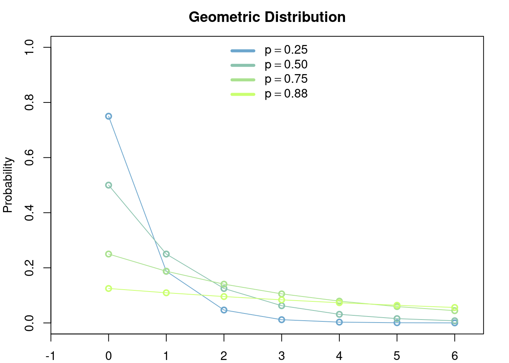
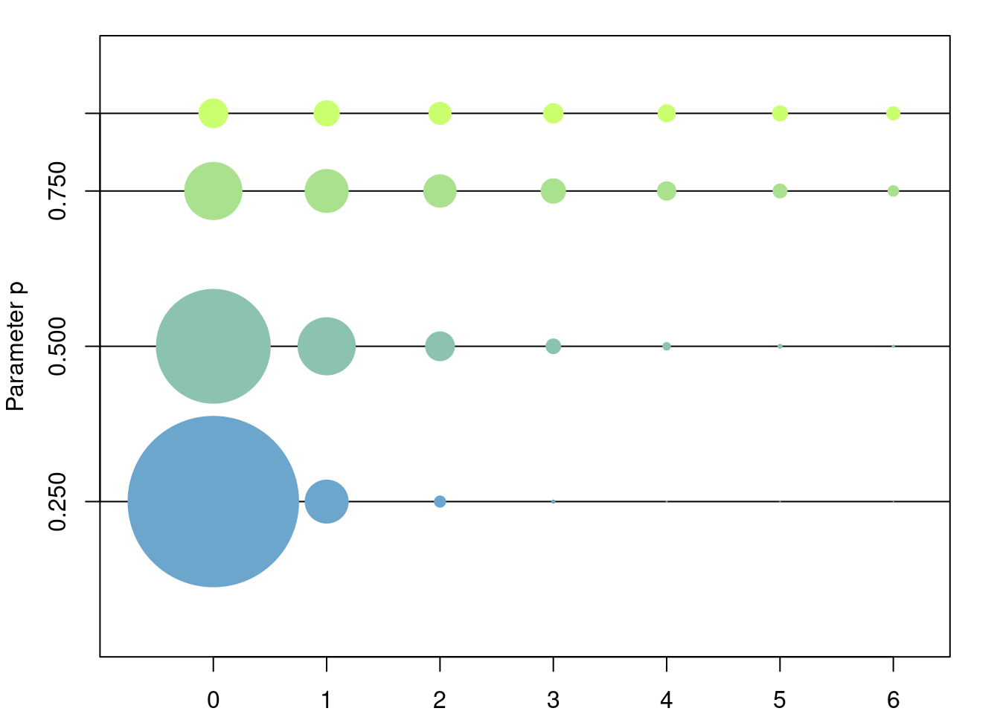
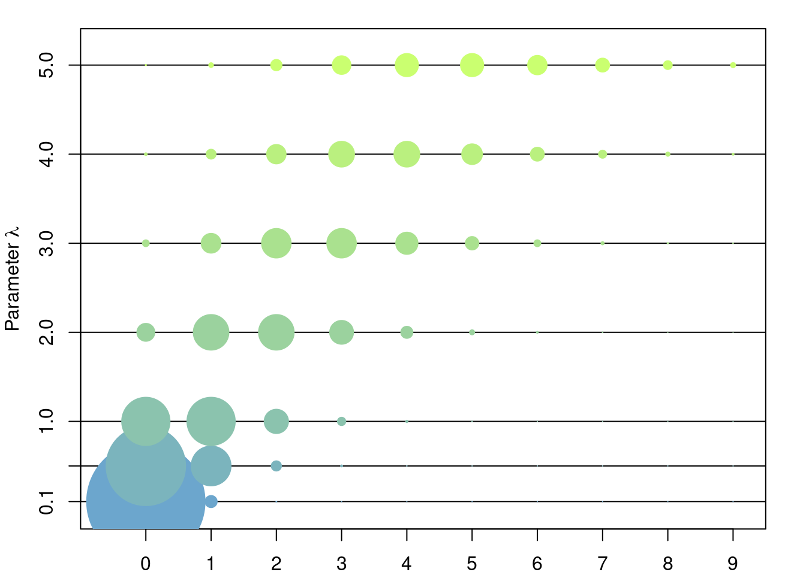
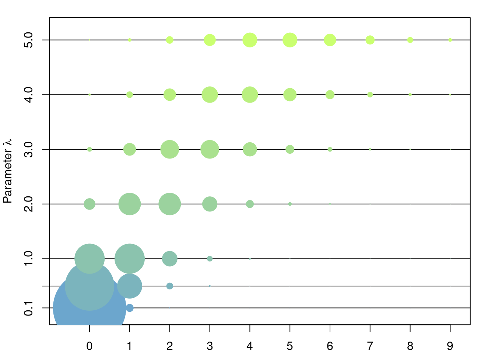

3 Common Distributions
3.1 Geometric Distribution
There are two distributions which share the common name of geometric distribution. For reasons that will be clear later we call these two versions the number of failures version and number of trials version.
3.1.1 Definition
3.1.1.1 Number of failures
Let \(p\in (0,1)\). The geometric distribution (number of failures version) is the discrete distribution in \(\{0, 1, \dots\}\) such that \[ \mathbb{P}(X = k) = (1-p)p^k,\quad k\in \{0, 1, \dots\}. \]

\[ \mathbb{E}[X] = \frac{p}{1-p},\quad \mathbb{Var}[X] = \frac{p}{(1-p)^2}. \]
3.1.1.2 Number of trials
Let \(p\in (0,1)\). The geometric distribution (number of failures version) is the discrete distribution in \(\{1, \dots\}\) such that \[ \mathbb{P}(X = k) = (1-p)p^{k-1},\quad k\in \{1, \dots\}. \]


\[ \mathbb{E}[X] = \frac{1}{1-p},\quad \mathbb{Var}[X] = \frac{p}{(1-p)^2}. \]
3.1.2 Model
The geometric distribution is used to model discrete waiting times until the ocurrence of the first succes in a series of consecutive and independent trials (e.g. coin tosses). It is easily proved that the waiting times modeled by the geometric distribution have the memorylessness property, i.e. at any given time during the experiment the results of the past do not afect at all the outcomes of the future, in particular the distribution of the number of trials until the first sucess after \(k\) failures have ben encountered is exactly the same as if no failures had been encountered so far, or, to use other words, as if the experiment were to be started all over again.
3.1.2.1 Number of failures
The canonical model for this distribution is the following: let \(p\in(0,1)\) be a failure probability of some event. For example you can think of \(p\) as the probability that a coin toss is 'agila while \(1-p\) is the probability that it is sol. Let \(X\) be the (random) number of 'agilas until the first sol appears. Then \[ \mathbb{P}(X = k) = p^k(1-p). \]
3.1.2.2 Number of trials
The canonical model for this distribution is the following: let \(p\in(0,1)\) be a failure probability of some event. For example you can think of \(p\) as the probability that a coin toss is 'agila while \(1-p\) is the probability that it is sol. Let \(X\) be the (random) number of trials until the first sol appears. Then \[ \mathbb{P}(X = k) = p^{k-1}(1-p). \]
This distribution can thought of as the discrete version of the exponential distribution. To see this you can compare \(\mathbb{P}(X>k)\) and \(\mathbb{P}(Y> y)\) where \(X\) is geometrically distributed and \(Y\) is exponentially distributed. We can also compare their canonical models. They both model a probabilistic dynamic in which the future is independent of the past.
3.2 Exponential Distribution
3.2.1 Definition
The exponential distribution of parameter \(\lambda>0\) is the continuous distribution with density \[ \lambda e^{-\lambda x}. \]

3.2.2 Model
The exponential distribution is used to model continuous waiting times until the first ocurrence of some event, where
intuitively such event is thought to occurr with some small probability in any given ``infinitesimal’’ period of time
and independently of all other times. Thus, the waiting times modeled by the exponential distribution have the memorylessness property, i.e. at any given time during the experiment the results of the past do not
afect at all the outcomes of the future, in particular the distribution of the waiting time until the
first occurence of the event after we have already waited for a time \(t\) with no occurrences,
is exactly the same as if we hadn’t waited \(t\) units of time at all, or, to use other words,
as if we had started the experiment all over again.
3.3 Poisson Distribution
3.3.1 Defintion
Let \(\lambda > 0\). The Poisson distribution is the the discrete distribution given by \[ \mathbb{P}({n}) = e^{-\lambda} \frac{\lambda^n}{n!},\quad \forall n\in\mathbb{Z}^+=\{0,1,2,\dots\} \]
 

3.3.2 Model
The Poisson distribution appears in two intuitively equivalent situations:
- As the limit of a bionmial random variable of parameters \(n\) and \(p\), as \(n\to\infty\) and \(np\to\lambda\). I.e. as the random number of successes of an ``infinite’’ number of independent trials (\(n\to\infty\)) with an infinitesimall probability of success (\(np\to\lambda\)).
- The Poisson distribution of parameter \(\lambda t\) can be seen as the number of occurrences in a time interval \([0,t]\) of an event whose waiting times between two consecutevie occurrences are exponentialy distributed of parameter \(\lambda\).